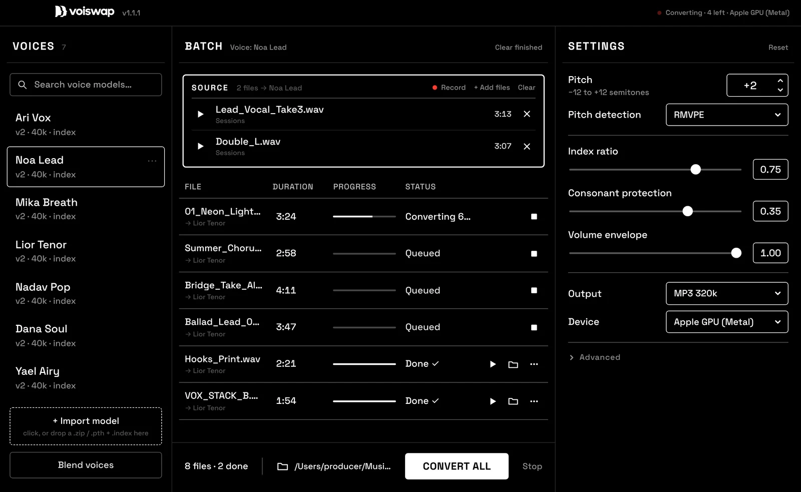

Drop clean acapellas or record one, pick an RVC voice model, and convert the whole batch in one go. Runs on your own computer, offline after setup.

Drag in acapellas or whole folders (WAV, MP3, FLAC, M4A), or hit Record and sing straight into VOISWAP.
Import any RVC v1/v2 model (.pth with its .index, or a .zip), set pitch and tone, and choose the output format.
Every file in the batch goes through the same voice and settings, one after another. Stop any time; nothing gets overwritten.
Queue as many files as you like. The source stays loaded, so you can run the same take through another voice right away.
Pick the input and channel, watch the level meter, listen back, retake. Takes are saved as 24-bit WAV and go straight into the batch.
Every converted file remembers its source, voice and settings. Load them back, change one thing, convert again.
Mix two or more models into a new voice and keep it in your library.
RMVPE, CREPE and Mangio-CREPE pitch detection, ±12 semitones, index ratio, consonant protection and volume envelope.
WAV 24-bit, FLAC or MP3 320k, ready for the session. Your history and outputs are still there after you close the app.
Apple Silicon GPU on Mac, NVIDIA (CUDA) on Windows, with CPU as a fallback.
Your voices and audio never leave your computer. No account, no upload.
.dmg and drag VOISWAP into Applications.VOISWAP-…-win-setup.exe. No admin rights needed.On first launch VOISWAP sets up its conversion engine. This takes a few minutes and needs an internet connection: about 1 GB on Mac, up to about 3 GB on Windows with an NVIDIA card. After that it works offline.
Built on open-source RVC research (Retrieval-based Voice Conversion), with HuBERT and RMVPE models. Use voice models you have the right to use.